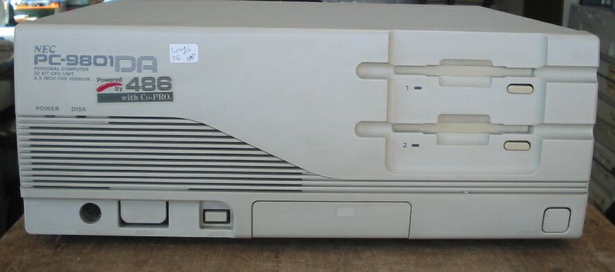
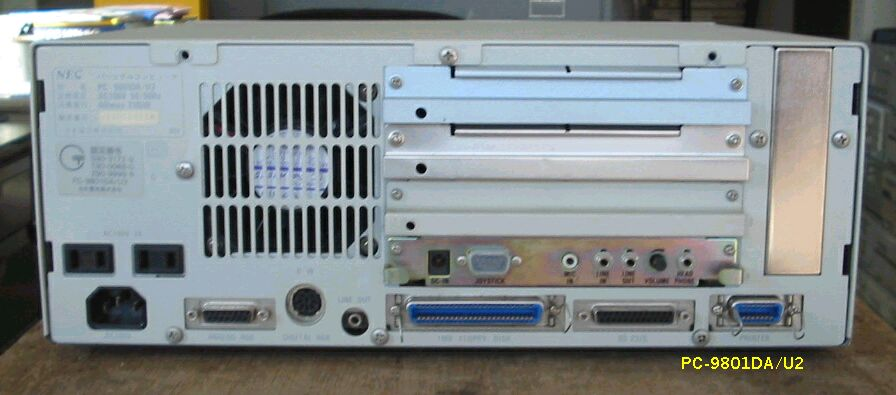

PC9801DA


主な仕様
型 名 ：PC-9801DAmodelU2
価 格 ：448000
発表日 ：91/01
出荷日 ：91/01
CPUクロック ： V30 8M相当386 20/16MHz
ROM ： BIOS及びN88-BASIC(86)96KB
標準RAM ： 1.6MB
最大ユーザーズメモリ ： 14.6MB
グラフィックVRAM容量 ： 256KB
グラフィックVRAM画素数 ： 640*400
グラフィックVRAM色数 ： 4096色中16色2画面
サウンドVRAM ： 16KB
テキストVRAM ： 12KB
拡張スロット数 ： 4
拡張スロット電源容量 + 5V ：0.8A
+12V ：0.06A
-12V ：0.07A
標準実装ドライブ FDD ：3.5インチ1M/640KFDD*2
内蔵インタフェースコネクタ ：1MFDDI/F プリンタI/F RS-232CI/F
：マウスI/F デジタル.B/WI/F アナログCRTI/F
漢字 ：標準:第一、第二、拡張
サウンド機能 ：標準実装
カレンダ時計 ：μPD4900相当年サポートあり
ＶＣＣＩ適合 ：基準レベル0
使用条件 電圧 ：AC100V±10%
周波数 ：50/60
温度 ：10〜35
湿度 ：20〜80%(結露なし)
消費電力 標準 (W) ：50
最大 (W) ：120
エネルギー消費効率 (W) ：50
外形寸法 本 体 (mm) (W)：380 (D)：335 (H)：150
キーボード(mm) (W)：435 (D)：180 (H)：34
重量 本体 (Kg) ：7.8
（2002/12/27 追記）
PC9801のページに戻る